7.1
Do circuito com portas ao seletor de dados
Um multiplexador (MUX) é um circuito combinacional que encaminha uma entre várias entradas de dados para uma saída. O estudo começa pela implementação com portas: observar qual caminho fica habilitado permite compreender o bloco integrado que será usado adiante.
7.1.1 Multiplexador 2:1
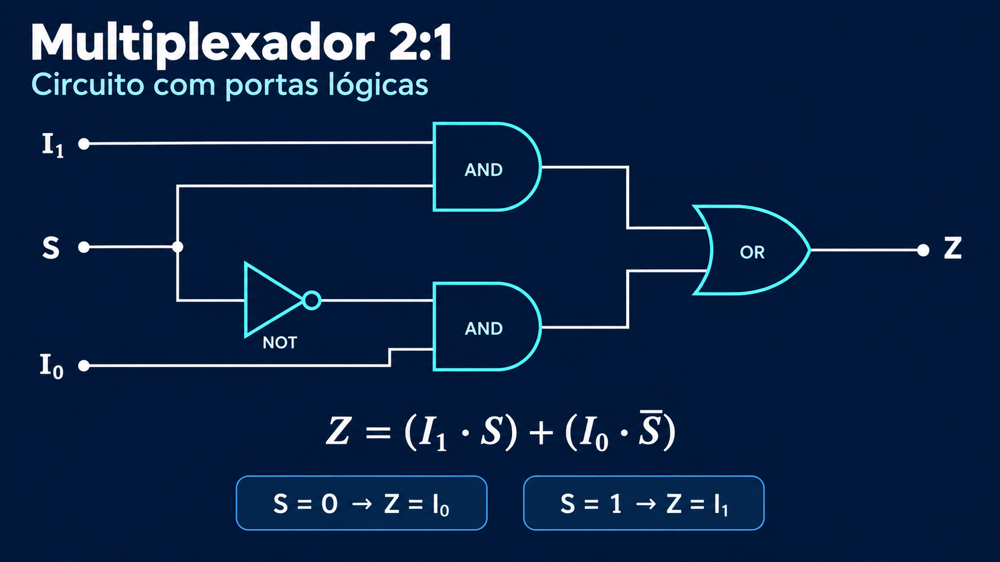
As entradas I0 e I1 transportam os dados. A entrada S determina qual deles chega a Z. O inversor produz o complemento de S, fazendo com que apenas uma das portas AND possa transmitir seu dado em cada estado estável da seleção.
Com S = 0, a AND ligada a I0 recebe 1 na entrada de controle e deixa esse dado passar. A outra AND recebe 0 e produz 0. Com S = 1, ocorre o contrário: I1 atravessa sua AND. A porta OR reúne os dois caminhos.
Na expressão, o ponto representa AND e o sinal de adição representa OR. Não se trata de somar dois números: os produtos habilitam caminhos alternativos. Se o dado selecionado mudar, a saída acompanha a mudança após o atraso de propagação. O MUX não armazena o valor anterior.
7.1.2 Multiplexador 4:1
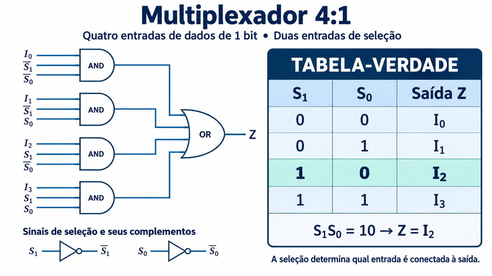
Para escolher entre quatro entradas são necessários dois bits de seleção. Cada AND recebe um dado e uma combinação específica de S1, S0 e seus complementos. Apenas uma dessas combinações vale 1 por vez.
No caso destacado, S1S0 = 10. O produto associado a I2 é habilitado e Z = I2, independentemente dos valores das outras três entradas. Quatro entradas de 1 bit não constituem uma saída de 4 bits: o circuito continua produzindo apenas um bit por vez.
7.2
Conceito de multiplexação - generalização
7.2.1 O MUX como chave digital
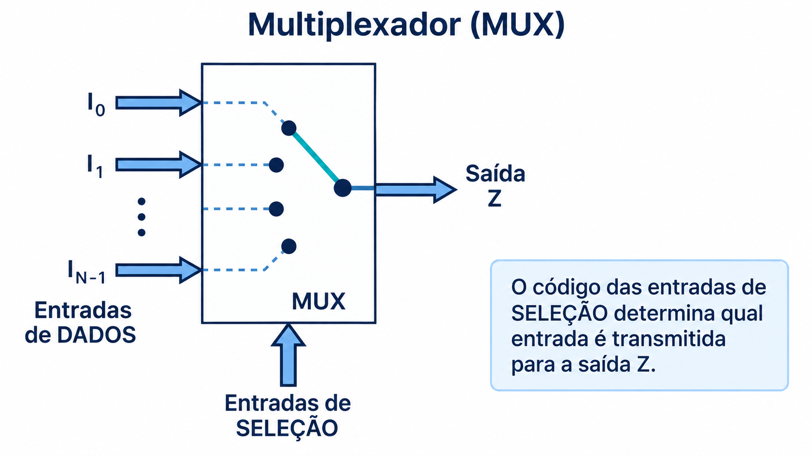
O desenho da chave resume o comportamento das portas: a seleção estabelece um caminho entre uma entrada e Z. O contato móvel é uma analogia funcional; em um circuito integrado, a comutação ocorre eletronicamente.
É importante distinguir as entradas de dados, que carregam a informação, das entradas de seleção, que identificam a origem desejada. Uma entrada de dados pode permanecer em 0 ou 1 ou transportar um trem de bits. O MUX encaminha seu nível instantâneo enquanto ela estiver selecionada.
7.2.2 Três computadores e uma saída compartilhada
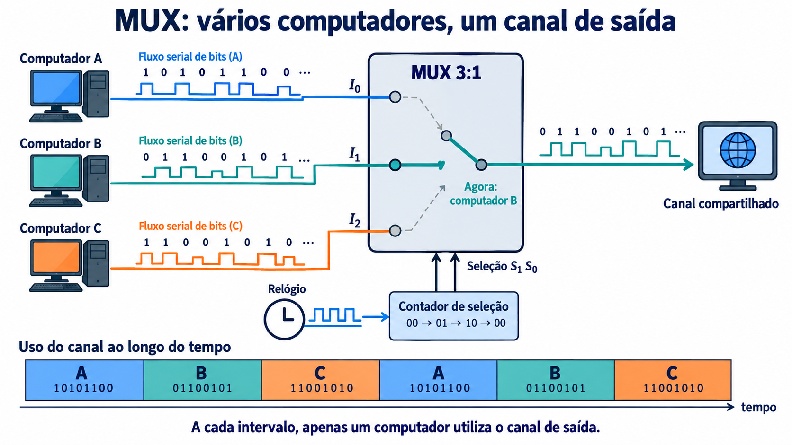
Os computadores A, B e C são fontes independentes de dados seriais. Em cada intervalo, o canal de saída recebe somente o sinal da fonte escolhida. A sequência de seleção 00, 01, 10, 00 produz a alternância A, B, C, A.
O relógio marca a troca dos intervalos, e o contador gera o código de seleção. Um intervalo pode conter vários bits, como sugere a faixa inferior. Nesse caso, o relógio de seleção avança mais lentamente que os bits transmitidos. A frequência de seleção depende de quantos bits cada fonte deve enviar em sua vez.
O MUX, sozinho, não sincroniza computadores nem guarda dados que chegam fora da vez. Para evitar perdas, os transmissores precisam respeitar os intervalos ou usar buffers e controle de acesso. A multiplexação por divisão de tempo exige também que o receptor saiba a qual fonte pertence cada intervalo.
7.2.3 Relação entre seletores e entradas de dados
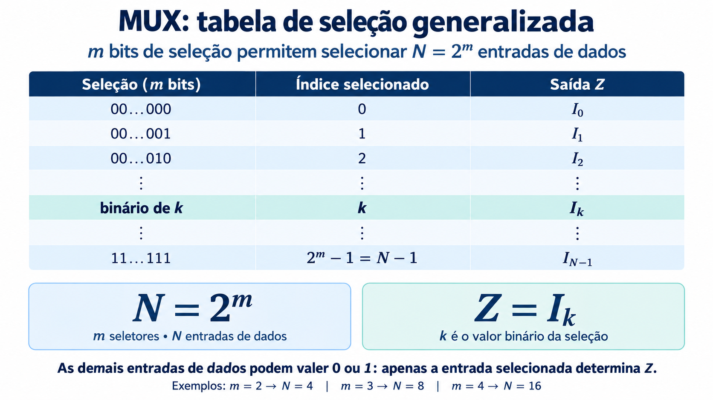
Um grupo de m bits produz 2m combinações diferentes. Quando todos os códigos são utilizados, o MUX possui N = 2m entradas de dados. O valor binário da seleção é o índice k da entrada encaminhada à saída.
A tabela generalizada evita enumerar todas as combinações dos dados: basta informar qual Ik é escolhido. As demais entradas podem assumir qualquer valor sem alterar Z, desde que a seleção permaneça estável.
Para uma quantidade N que não seja potência de dois, o número mínimo de seletores é m = ⌈log2N⌉. Assim, três fontes exigem dois bits, mas o código 11 fica sem uso. O controlador precisa tratar ou evitar esse estado.
7.3
Circuito MSI
O estudo passa da construção com portas para um componente MSI: o 74151 reúne a função de um MUX 8:1 em um único circuito integrado. A figura usa a nomenclatura do SN74LS151 da Texas Instruments.
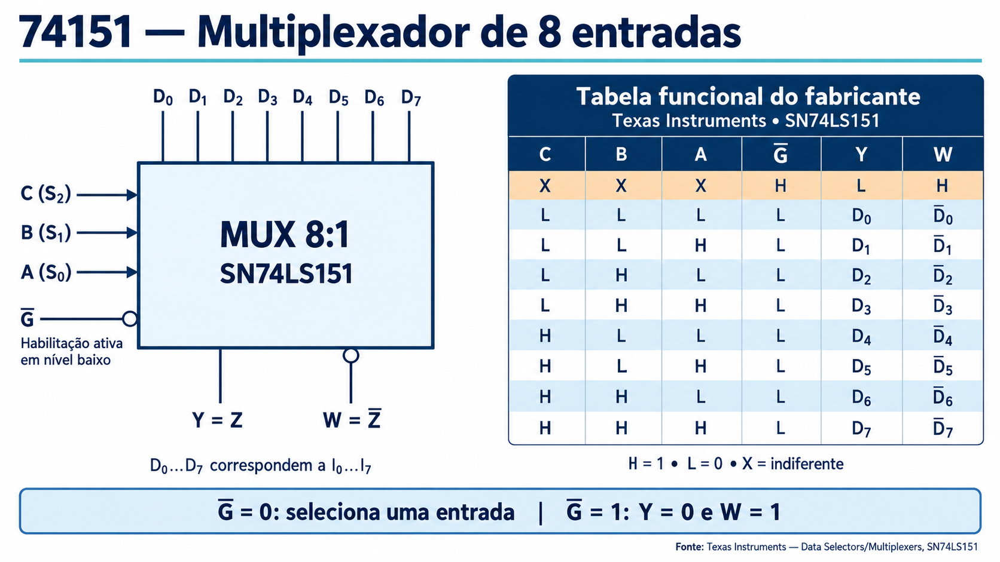
As oito entradas D0 a D7 correspondem às entradas I0 a I7 usadas nos esquemas conceituais. Os seletores C, B e A têm pesos 4, 2 e 1, respectivamente: C corresponde a S2, B a S1 e A a S0.
A entrada G é uma habilitação ativa em nível baixo. Com nível 0, a saída não inversora Y acompanha a entrada selecionada e W fornece o complemento. Com nível 1, a seleção deixa de atuar: Y = 0 e W = 1. Esse estado é diferente de uma saída em alta impedância.
| Habilitação G | Seleção CBA | Y | W |
|---|---|---|---|
| 1 | Qualquer | 0 | 1 |
| 0 | Código k | Ik | Ik |
Na tabela do fabricante, H significa nível alto, L significa nível baixo e X indica uma condição indiferente. O X não representa um terceiro valor lógico: significa que aquele sinal não modifica o resultado da linha.
Referência: datasheet SN74LS151 da Texas Instruments.
7.3.1 Expansão: construir um MUX 16:1
Combinação de integração MSI e SSI
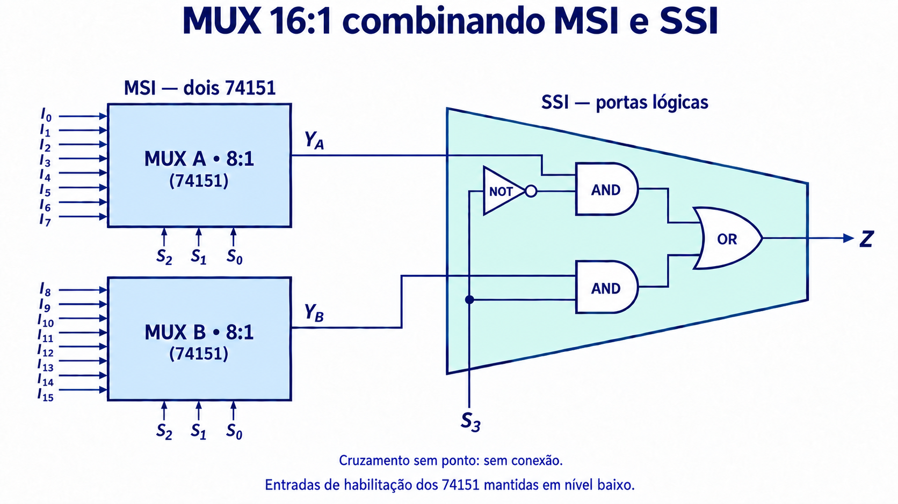
As dezesseis entradas são divididas em dois grupos. O MUX A recebe I0 a I7 e o MUX B recebe I8 a I15. Os dois compartilham S2, S1 e S0, selecionando simultaneamente a mesma posição dentro de seus grupos.
Por exemplo, o código 101 faz o primeiro MUX fornecer I5 e o segundo fornecer I13. O quarto seletor, S3, escolhe qual desses dois resultados será encaminhado a Z.
O estágio final retoma o MUX 2:1 do início do capítulo. Quando S3 = 0, a AND superior transmite YA; quando S3 = 1, a AND inferior transmite YB. A OR combina esses caminhos. Os 74151 permanecem habilitados, com G em 0.
A figura combina MSI, nos blocos multiplexadores, com SSI, nas portas que realizam a seleção final. Um ponto cheio marca uma conexão elétrica; o cruzamento sem ponto entre S3 e YB não conecta esses sinais.
Expansão usando apenas MUX 8:1
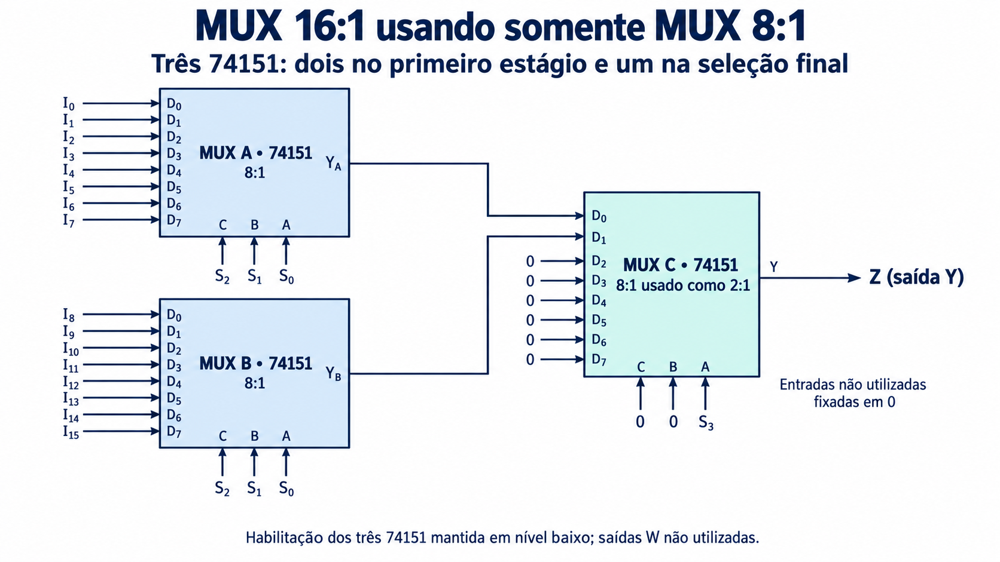
O terceiro 74151 substitui as portas do estágio final. Ligam-se YA a D0 e YB a D1. Como os seletores C e B desse terceiro CI estão em 0, apenas os endereços 000 e 001 podem ser gerados. O seletor A recebe S3.
Desse modo, o terceiro MUX 8:1 é utilizado como um MUX 2:1. Suas entradas D2 a D7 não são selecionadas e aparecem fixadas em 0. Os três CIs ficam habilitados, e a saída final é a saída não inversora Y do último estágio.
As duas soluções realizam a mesma função. A primeira evidencia a construção com portas; a segunda mostra como um bloco integrado pode realizar uma função menor que sua capacidade total. Em ambas, os dados atravessam dois estágios, cujos atrasos de propagação se acumulam.
7.4
Aplicações com Mux
As aplicações começam pela leitura sequencial de uma palavra paralela. Oito bits estão disponíveis ao mesmo tempo nas entradas do MUX; ao variar o endereço, o circuito apresenta um deles por vez em Z. O MUX faz a seleção, enquanto um controlador ou contador determina a sequência.
7.4.1 Seleção em intervalos não regulares
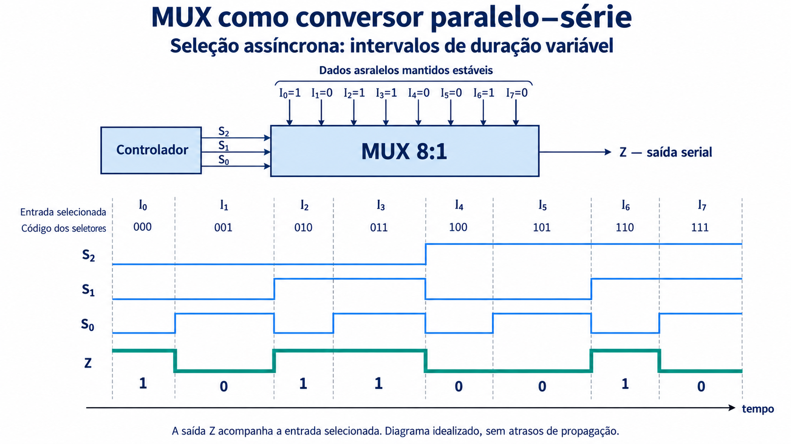
No exemplo, I0…I7 contêm, nessa ordem, 1, 0, 1, 1, 0, 0, 1, 0. O controlador aplica 000, 001, 010 e assim por diante até 111. A largura desigual dos intervalos indica que a seleção não é comandada por um clock periódico no desenho.
Leia o diagrama verticalmente: primeiro identifique o código S2S1S0, depois localize a entrada Ik correspondente e, por fim, confira Z. Em 010 e 011 a saída permanece em 1, porque I2 e I3 valem 1. Portanto, uma nova seleção não exige uma transição na saída.
A palavra precisa permanecer estável durante a leitura, por exemplo nas saídas de um registrador. Se os dados mudarem antes de completar a sequência, os bits transmitidos podem pertencer a palavras diferentes.
7.4.2 Seleção síncrona por contador crescente
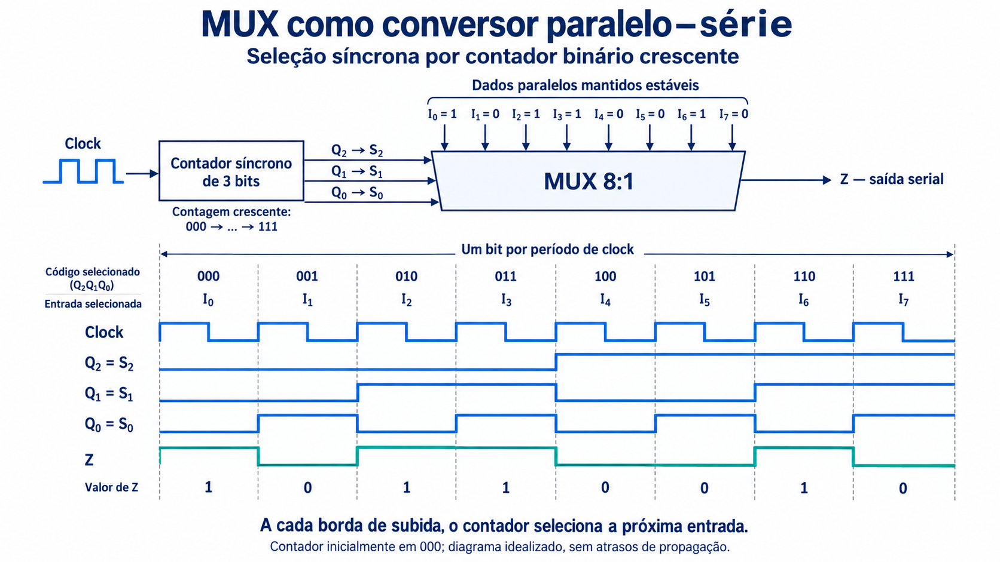
Agora o controlador é um contador binário crescente de três bits. As saídas Q2, Q1 e Q0 são ligadas aos seletores S2, S1 e S0. A cada borda ativa do clock, o contador avança uma posição e seleciona o próximo dado.
Com a contagem inicialmente em 000, os intervalos seguintes correspondem a 001, 010, 011, 100, 101, 110 e 111. Em um contador módulo 8 livre, a sequência retorna a 000. A cada período de clock é apresentado um bit; oito períodos percorrem a palavra completa.
Este circuito antecipa o estudo dos contadores. Em contagem binária contínua, Q0 tem frequência fclock/2, Q1 tem fclock/4 e Q2 tem fclock/8. O período completo de Q0 dura dois períodos de clock; não deve ser confundido com a duração de um bit transmitido.
O MUX continua sendo combinacional: o comportamento síncrono vem do contador que controla suas entradas. O diagrama idealiza as mudanças simultâneas. Na implementação, o contador e o MUX possuem atrasos, e o receptor deve amostrar a saída somente após sua estabilização. Um registrador e um controle de carga permitem atualizar a palavra entre ciclos completos.
7.4.3 Três fontes seriais usando o 74151
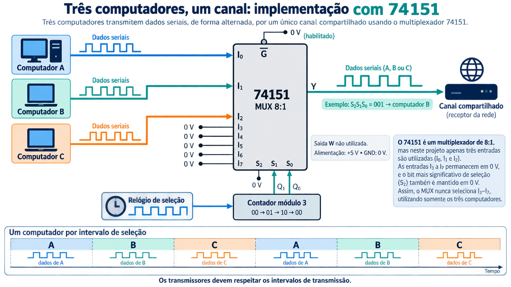
O exemplo de compartilhamento de canal reaparece agora com um CI real. A, B e C chegam a I0, I1 e I2. O 74151 possui oito entradas, mas apenas três são utilizadas. As entradas restantes são mantidas em um nível definido, indicado como 0 V.
O seletor S2 fica em 0. Um contador módulo 3 fornece Q1 e Q0 a S1 e S0, na sequência 00 → 01 → 10 → 00. Assim, os endereços efetivos são 000, 001 e 010. Um contador binário comum de dois bits incluiria 11 e precisaria de controle adicional para funcionar em módulo 3.
A habilitação fica em nível baixo e a saída usada é Y, não inversora. Quando o código é 001, o fluxo serial de B atravessa o circuito. A cada mudança de seleção, a saída passa a acompanhar a fonte seguinte.
O relógio mostrado é o relógio de seleção dos canais. Ele não precisa ser o relógio de cada bit. Se cada intervalo comportar um bloco de bits, a troca de canal só deve ocorrer após o bloco reservado àquela fonte. As formas de onda da figura representam fluxos de modo ilustrativo, sem definir um protocolo de rede.
7.4.4 MUX como gerador de funções booleanas
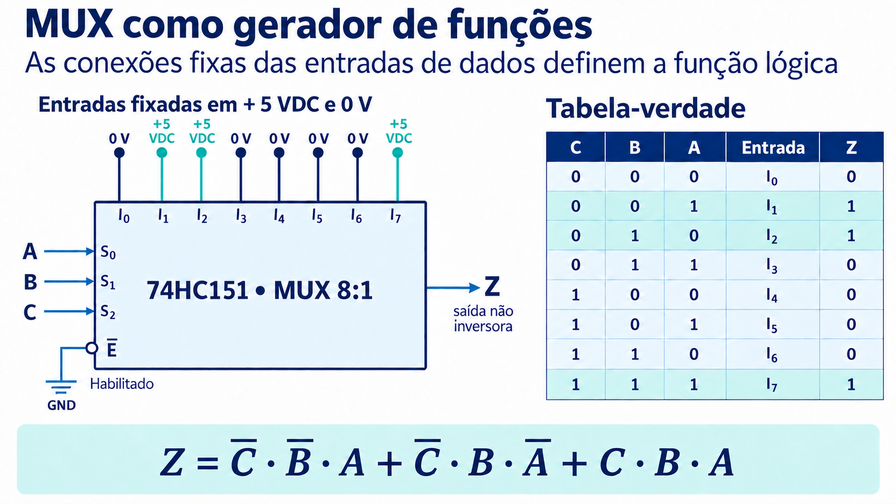
Em vez de receber dados variáveis, cada entrada do MUX é ligada permanentemente a um nível lógico. As variáveis da função passam a ocupar as entradas de seleção. Cada linha da tabela-verdade escolhe uma entrada cujo valor já foi definido pelas conexões.
Na figura, A → S0, B → S1 e C → S2. Por isso, o índice das entradas segue o código CBA. I1, I2 e I7 estão em +5 V; I0, I3, I4, I5 e I6 estão em 0 V. A habilitação também está em 0 V.
A saída não inversora vale 1 nas combinações 001, 010 e 111. Cada uma produz um mintermo: uma variável aparece complementada quando vale 0 naquela linha e sem complemento quando vale 1. A soma lógica desses mintermos fornece a forma canônica:
Por exemplo, CBA = 010 seleciona I2, ligado a +5 V, e corresponde ao termo CBA. Já 101 seleciona I5, ligado a 0 V, e não contribui com um mintermo para a soma.
Procedimento para implementar uma função
- Defina a tabela-verdade e a ordem das variáveis nos seletores.
- Para cada código k, ligue Ik ao nível correspondente ao valor desejado para a função.
- Mantenha o circuito habilitado e use a saída com a polaridade prevista.
- Confira as combinações da tabela comparando cada entrada selecionada com Z.
Um MUX 8:1 implementa dessa maneira qualquer função booleana de três variáveis, sem exigir simplificação prévia. “Gerador de funções” significa aqui realização de uma função lógica combinacional: não se trata de um gerador autônomo de ondas. As conexões fixas estabelecem a função; os valores aplicados a A, B e C determinam seu resultado.
No exemplo com 74HC151 alimentado em 5 V, os nós de mesma tensão indicam ligações ao mesmo potencial. As conexões de alimentação e as entradas fixas devem respeitar o datasheet da família utilizada.
7.5
Demux
7.5.1 Uma entrada, várias saídas
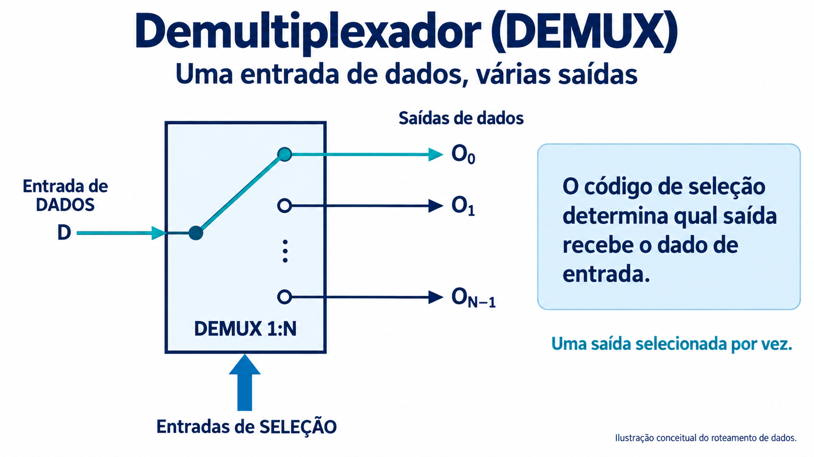
O DEMUX distribui uma entrada de dados para uma das saídas, conforme o código de seleção. Enquanto o MUX escolhe uma origem entre várias, o DEMUX escolhe um destino. Com m seletores, podem ser endereçadas até 2m saídas.
Na figura, D é encaminhado a O0. A chave é uma representação conceitual da seleção eletrônica. O desenho não define, por si só, o nível das saídas não selecionadas: esse comportamento depende da implementação e deve ser consultado na tabela funcional do componente.
Um DEMUX não guarda os bits distribuídos. Para obter uma palavra paralela persistente a partir de um fluxo serial, é necessário acrescentar elementos de memória e controlar o instante de gravação de cada bit. Apenas mudar a seleção não preserva automaticamente o dado na saída anterior.
7.5.2 74HC138 configurado como DEMUX 1:8
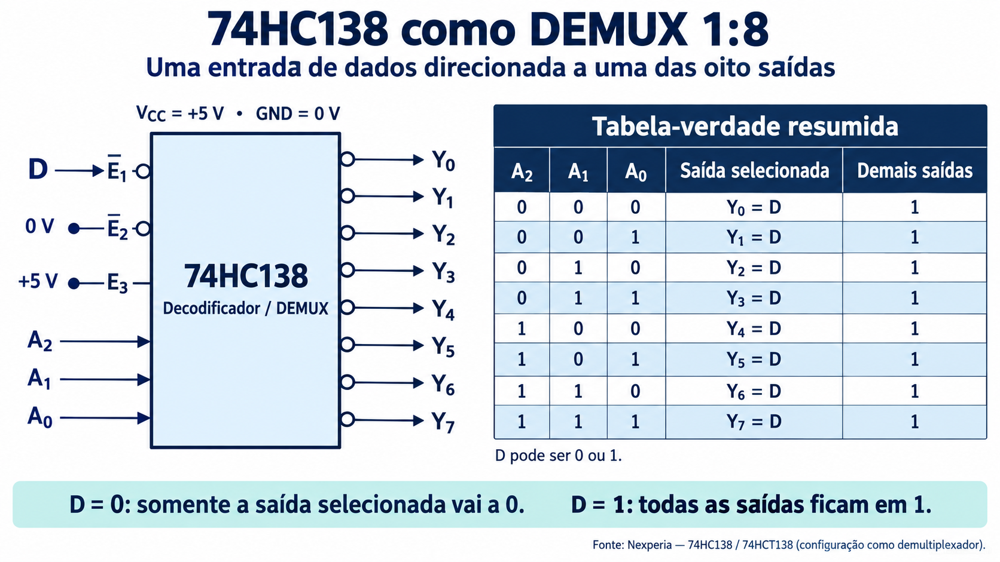
O 74HC138 é um decodificador de três bits com oito saídas ativas em nível baixo. Suas habilitações permitem utilizá-lo também como demultiplexador. Na configuração da figura, o dado D é aplicado à habilitação ativa em nível baixo E1, E2 permanece em 0 e E3 em 1.
A2A1A0 determina a saída escolhida. Com D = 0, o CI está habilitado e somente essa saída vai a 0. Com D = 1, o CI é desabilitado e todas as saídas ficam em 1. Assim, a saída selecionada acompanha D e as demais permanecem em 1.
| Seleção A₂A₁A₀ | D | Saída selecionada | Demais saídas |
|---|---|---|---|
| Código k | 0 | Yk = 0 | 1 |
| Código k | 1 | Yk = 1 | 1 |
Por exemplo, com seleção 101, Y5 acompanha D. Se D alternar entre 0 e 1 mantendo o endereço estável, Y5 reproduz essa alternância. As outras sete saídas continuam em 1. Isso explica por que a tabela resumida pode escrever Yk = D mesmo que o componente seja um decodificador com saídas ativas em nível baixo.
A tabela corresponde às ligações específicas da figura. Aplicar o dado a outra habilitação pode alterar a polaridade da transferência. Consulte o datasheet do 74HC138/74HCT138 da Nexperia para identificar os terminais e as condições de habilitação.